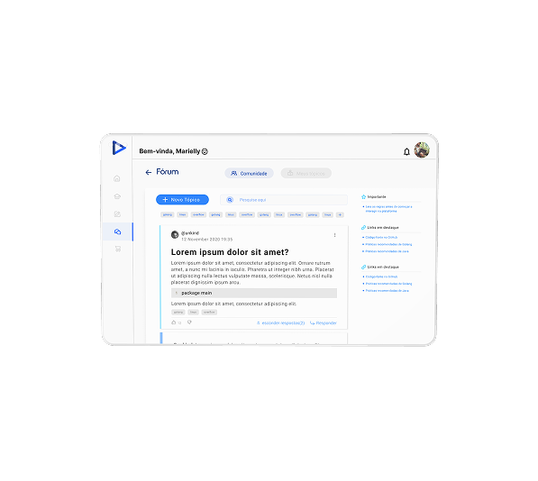
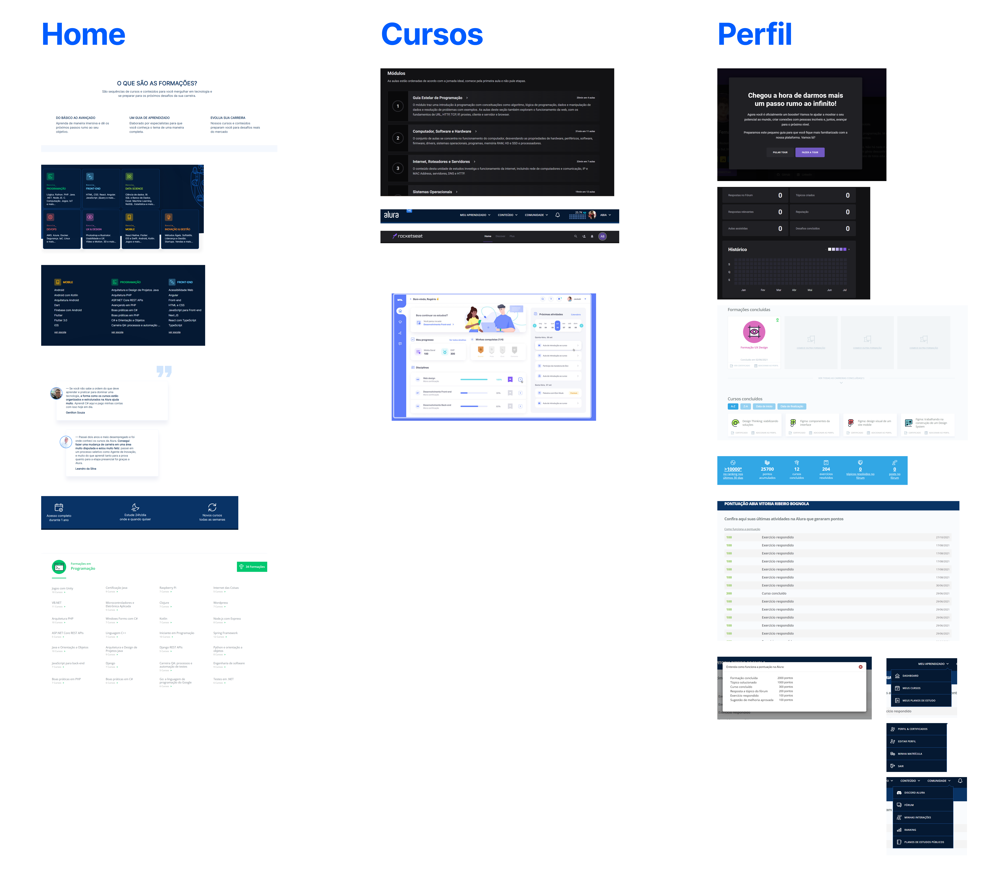
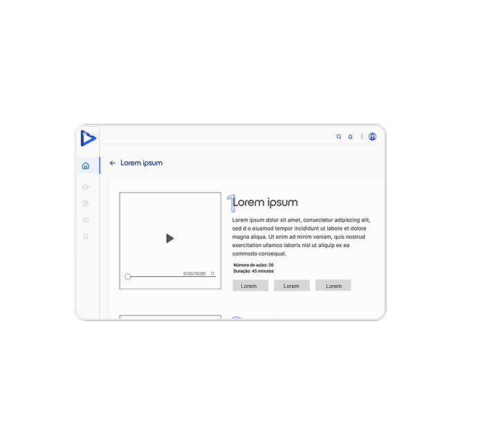
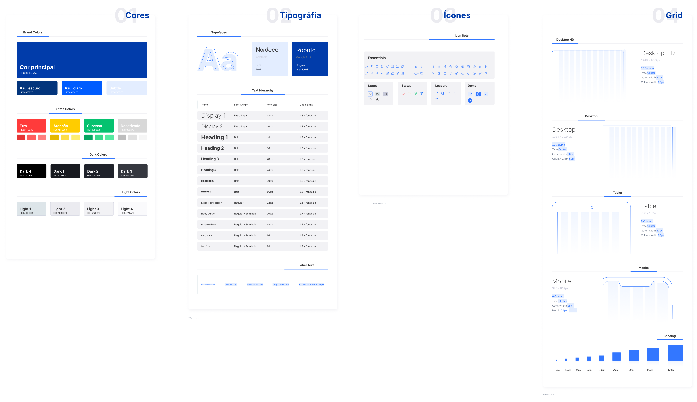
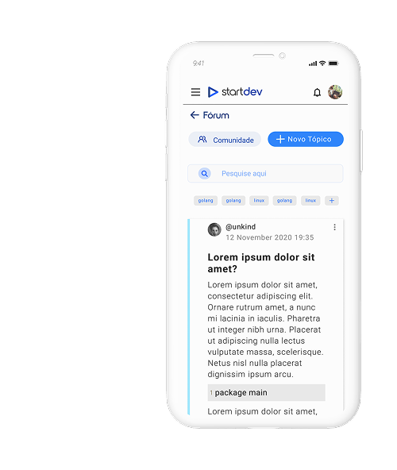
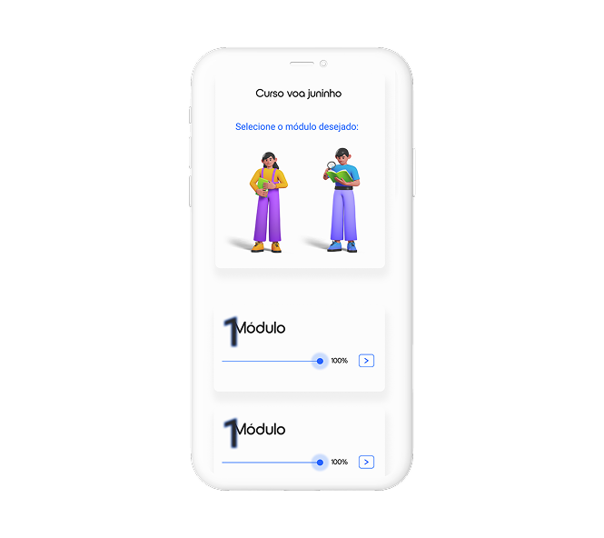
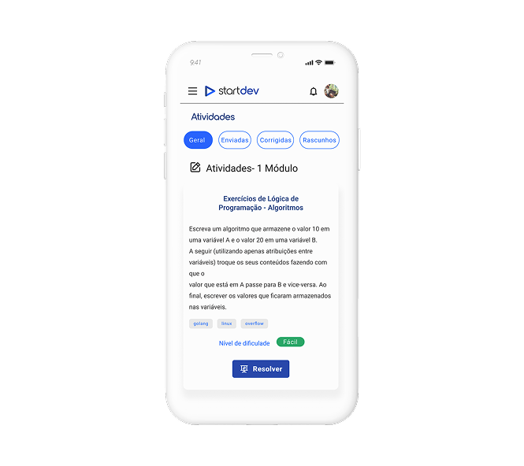
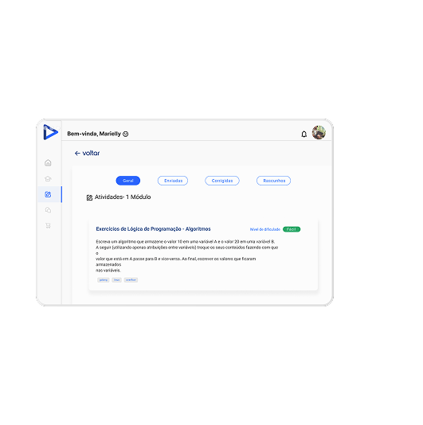

StartDev — aprender a programar na prática e em comunidade
Uma plataforma de ensino para futuros desenvolvedores: cursos em vídeo, exercícios de código, gamificação por pontos e um fórum ativo. Desenhei a experiência do wireframe ao design system — para web e mobile, em tema claro e escuro.

Aprender a programar sozinho é difícil — e solitário
Quem começa na programação se perde entre vídeos soltos, falta de prática guiada e nenhum lugar para tirar dúvidas. O desafio era reunir aula, exercício e comunidade em um só fluxo — que motivasse o aluno a continuar.
A plataforma precisava funcionar bem no celular e no desktop, em tema claro e escuro, sem perder consistência.
Como cheguei na solução
Quatro etapas, do entendimento do problema à entrega documentada.
Entender o mercado e o aluno
Analisei referências como Alura e Coderhouse para mapear o que funcionava — e o que faltava — em homepage, comunidade e acompanhamento de cursos. Cruzei isso com entrevistas para entender a real motivação de quem aprende a programar.

Wireframes antes do pixel
Comecei em baixa fidelidade para validar hierarquia, navegação e o player de aula rápido — sem me prender a cor ou estilo. Assim testei a estrutura com usuários antes de investir na interface final.

Um sistema para escalar com consistência
Defini cores, tipografia (Nordeco + Roboto), iconografia e grid responsivo — com tokens para tema claro e escuro. Isso deu ao time uma base para crescer o produto sem retrabalho.

Aula, prática e comunidade no mesmo lugar
Cada tela reforça clareza e continuidade: do fórum às atividades de código, passando pela trilha de módulos com progresso.




Progresso que motiva a voltar
O painel de pontos mostra cursos concluídos, pontuação e progresso no curso atual — transformando o aprendizado em uma jornada com metas claras.
O tema escuro foi tratado como cidadão de primeira classe, com tokens próprios de contraste e legibilidade.
O que o projeto entregou
Maior aprendizado: unir gamificação a uma navegação simples foi o que deu sentido de progresso ao aluno — o engajamento mora na clareza, não no excesso de recursos.
Quer um produto assim pro seu desafio?
Bora conversar sobre o seu produto.